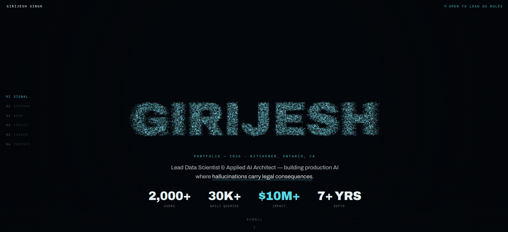

The constraint that produced the design
I wanted a portfolio that demonstrated engineering rather than describing it, and I wanted it to stay honest about cost: no build step, no framework, no bundle, one file. Whatever it did had to run at 60fps on a laptop that's also on a video call.
That rules out the obvious approach — a scene per section, models loaded, materials swapped. Instead: allocate the particles once, and never allocate again. Every visual in the site is the same buffer, interpolated to a different target. Scrolling doesn't create anything; it just changes where the points are heading.
Shapes are just Float32Arrays
Each chapter has a target shape, and a shape is nothing more than N × 3 floats — a position for every particle. They're generated once at startup:
this.shapes = [
this.shapeCloud(N), // 0 · text: GIRIJESH
this.shapeNeural(N), // 1 · a graph with nodes and edges
this.shapeTree(N), // 2 · hierarchical retrieval tree
this.shapeOrbit(N), // 3 · live systems in orbit
this.shapeTowers(N), // 4 · data towers
this.shapeGlobe(N), // 5 · four regions
this.shapeCloud(N), // 6 · text: LET'S TALK
];Each generator is a small piece of geometry with a bias toward looking organic rather than correct. The neural one, for example, distributes 120 nodes on a sphere using the golden-angle spiral, connects any pair closer than a threshold (with a coin flip, so the graph isn't uniformly dense), then scatters particles either onto a node or along an edge — 50/50. Points on nodes get a fat Gaussian jitter; points on edges get a tight one. That asymmetry is what makes it read as "network" instead of "noise."
The jitter comes from summing three uniform randoms — a cheap approximation of a Gaussian, and one of the oldest tricks in graphics:
g_() { return (Math.random() + Math.random() + Math.random() - 1.5); }Scroll position is a float, not a section index
The core of the whole thing is one number I call cf — chapter float. Each chapter anchor is a DOM element; I find the two the viewport midpoint currently sits between and compute the fractional position:
// mid-viewport is 40% of the way from chapter 2 to chapter 3 → cf = 2.4
cfT = k + (mid - centerOf(A[k])) / (centerOf(A[k+1]) - centerOf(A[k]));
this.cf += (cfT - this.cf) * 0.07; // exponential smoothingThat second line is load-bearing. Raw scroll position is jittery, and trackpad momentum makes it worse. Easing the internal value toward the target every frame means the particles keep drifting for a beat after you stop scrolling — which is what makes it feel like a physical system rather than a scrubber.
Then cf picks the two shapes to blend and how far between them:
const i0 = Math.floor(cf), f = cf - i0;
const SA = this.shapes[i0], SB = this.shapes[i0 + 1];The trick that makes it feel alive: per-particle stagger
If every particle interpolates on the same schedule, the morph looks like a slideshow crossfade. The shape dissolves and reassembles in lockstep, and it reads as cheap.
So each particle gets a fixed random delay, assigned once:
this.stag[i] = Math.random() * 0.22; // per-particle head start
let ff = (f - stag[i]) / 0.78; // shift and rescale its window
ff = clamp(ff, 0, 1);
ff = ff * ff * (3 - 2 * ff); // smoothstepNow particle 3 starts moving immediately and particle 9,000 waits until the transition is 22% done. The shape doesn't morph — it disintegrates and re-forms, with a leading edge and a trailing edge. One extra float per particle, and it's the difference between "a slide transition" and "a swarm making a decision."
The smoothstep on top means no particle starts or stops abruptly. And on every frame the actual buffer chases its target rather than snapping to it, which adds one more layer of lag:
arr[j] += (target - arr[j]) * 0.07;Turning text into particles with a 2D canvas
"GIRIJESH" and "LET'S TALK" aren't 3D text geometry — no font loader, no extrusion, no extra dependency. They're rasterized on an invisible 2D canvas and sampled:
- Draw the string to an offscreen
<canvas>at 220px, white on transparent. - Read back the pixels with
getImageData. - Walk the grid every 3px and keep any pixel with alpha > 120.
- Map those 2D coordinates into world space. That's your point cloud.
- For each of the 24,000 particles, pick a random point from that cloud and add a sub-pixel wobble.
The whole thing is about twenty lines, works with any font the browser already has, and re-runs on resize so the text always fits the viewport. It also means a shape can be any glyph or icon you can draw on a canvas — which is a much bigger door than I needed to open.
One gotcha: it has to wait for document.fonts.ready. Sample too early and you rasterize the fallback font, so the particles spell your name in Arial.
Cost control
- One draw call. A single
BufferGeometry, a singleTHREE.Points. 24,000 particles cost roughly what one does. - The sprite is generated, not loaded. A 64×64 radial-gradient canvas becomes the point texture — no image request, no HTTP round trip.
- Additive blending,
depthWrite: false. Overlapping particles glow instead of z-fighting, and skipping depth sorting is free performance. - Mobile gets 9,000 particles instead of 24,000, larger points, and the camera pulled back 1.5×. Same code path, different constant.
- Pointer parallax is smoothed the same way as scroll — the camera drifts toward the cursor rather than tracking it, so a fast mouse doesn't cause a whip-pan.
What I'd tell someone copying this
The engine is not the interesting part — it's maybe 200 lines and most of it is geometry. What makes it work is that every parameter is tuned toward lag: smoothed scroll, staggered particles, eased interpolation, drifting camera. Nothing in the scene responds to input instantly, and that's precisely why it feels expensive.
The failure mode of a portfolio like this is that it becomes a tech demo wearing a resume. The scenes earn their place by mapping to the content — a graph for systems, a retrieval tree for the RAG work, towers for the numbers, a globe for four regions. If the visual doesn't argue for the section it's under, cut it.